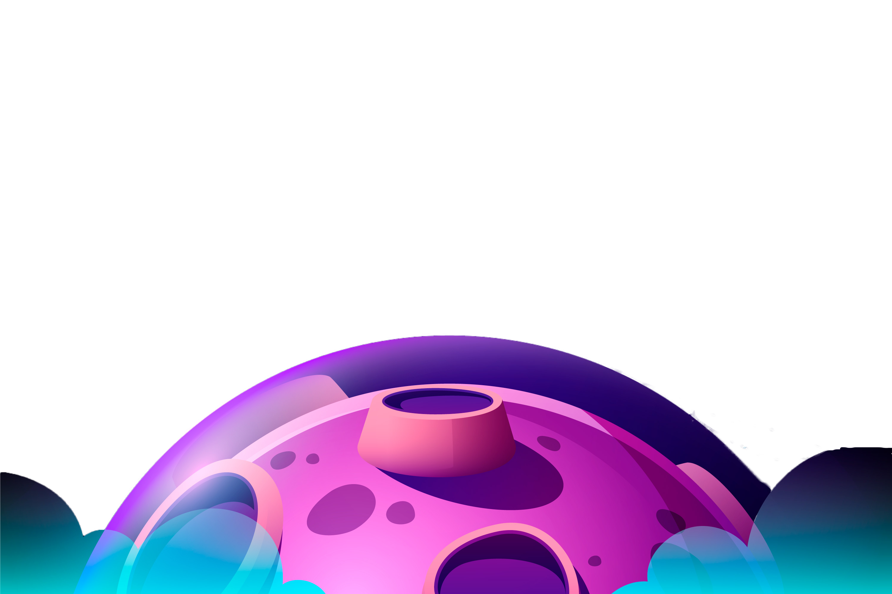
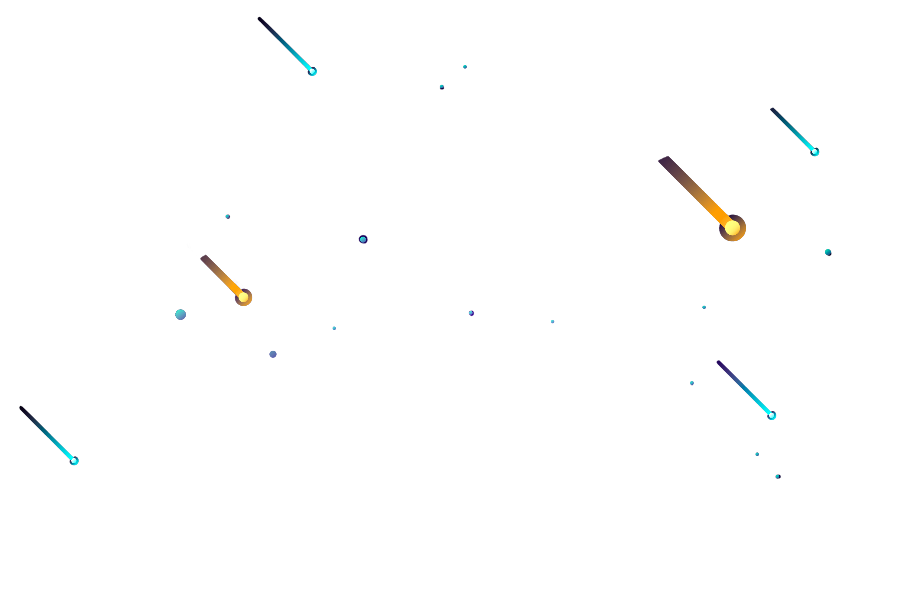

Selamat Datang Di Project Parallax Sean
 

Tech stack yang digunakan :
Proyek ini bertujuan untuk menampilkan kemampuan saya dalam membangun situs web yang interaktif dan
responsif.
Dengan menggunakan HTML untuk struktur dasar, CSS untuk desain dan tata letak, serta JavaScript untuk
memberikan fungsionalitas dinamis,Saya juga memanfaatkan teknik parallax
untuk memberikan efek visual yang menarik dan modern.
Saya terus belajar dan mengembangkan keterampilan saya dalam pengembangan web, dan proyek ini adalah contoh
nyata dari dedikasi dan kerja keras saya.
Terima kasih telah mengunjungi situs ini, dan saya harap Anda menikmati eksplorasi Anda di sini.
Jangan ragu untuk menghubungi saya jika Anda memiliki pertanyaan atau ingin berdiskusi lebih lanjut tentang
pengembangan web.
Proyek ini bertujuan untuk menampilkan kemampuan saya dalam membangun situs web yang interaktif dan
responsif
Dengan menggunakan HTML untuk struktur dasar, CSS untuk desain dan tata letak, serta JavaScript untuk
memberikan fungsionalitas dinamis
Saya terus belajar dan mengembangkan keterampilan saya dalam pengembangan web, dan proyek ini adalah contoh
nyata dari dedikasi dan kerja keras saya.
Terima kasih telah mengunjungi situs ini, saya harap Anda menikmati eksplorasi Anda di sini.
Jangan ragu untuk menghubungi saya jika Anda memiliki pertanyaan atau ingin berdiskusi lebih lanjut tentang
pengembangan web.